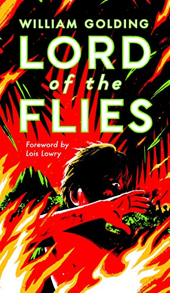

According to a research paper "Uncovering the complex genetics of human character" by Igor Zwir et al, 30%-60% of our personality is inherited, and there are a number of genes that are known to affect attention spans, leadership abilities, etc.
So what is the other section of our personality not influenced by our genes? I believe that that part is an accumulation of morals, lessons and experiences we learn throughout our lives. Do you sometimes feel like something your friend says often sticks to you too? That's this part of your personality.
The media will sometimes refer to a terrorist or criminial as a "monster" to mean "someone that doesn't have human morals and doesn't feel empathy". However, they probably just mean to say something like "psychopath", a real condition that causes one to struggle creating meaningful connections with others or feeling emotional. While calling someone a monster denys their human rights, actually finding out if the person has a condition and using that to describe them is much better (however, just calling them a "psychopath" without any evidence is just as bad).
Some people may be born without the ability to feel very emotional, and we all are different; we feel pain, happiness and anger in different ways, but that does not make us a monster. We're all human, and calling someone a monster would be denying them of their human rights.
In "Lord of the Flies", the children, without adult supervision, go aggressive and even resort to hurting, killing each other. This book shows that human instincts are to be animal, and society and rules holds these impulses back, or does it?
BBC Earth argues that babies are usually peaceful and tend to prefer peace, and a number of studies supports the fact that children as young as seven months old can recognize that being kind is good. I agree with this; at first, we are not born with morals, but throughout our early years of interacting with other humans, we learn what is "right" and "wrong".
But some things can change us; power. According to INSIDER, people with power tend to feel less empathy for others. Moreover, doing something bad and getting away with it can also cause us to think that what we thought was morally wrong is actually allowed.
In "Lord of the Flies", the hunters first learnt how powerful they could be by successfully killing pigs and eating them. Then, as more children joined their side, they felt more and more powerful. They got away with killing Simon, and that also made them less emotional to murder and lost empathy.
Genes make up about 30-60% of our personality, and the other section consists of the things our environment teaches us. Nobody is born a "monster", a horrifying creature that can't feel any emotions and doesn't even deserve to be a human. Although there are conditions that makes one less able to feel emotions, that does not make them a non-human, and deserve the same rights we have. Moreover, usually peaceful people can change to selfish and aggressive people with the feeling of power.
Zwir, Igor, et al. “Uncovering the Complex Genetics of Human Character.” Nature News, Nature Publishing Group, 3 Oct. 2018, https://www.nature.com/articles/s41380-018-0263-6.
“Is Personality Genetic? Hereditary & Environmental Based Traits.” Crystal Knows, https://www.crystalknows.com/blog/is-personality-genetic.
“Psychopathy.” Psychopathy - an Overview | ScienceDirect Topics, https://www.sciencedirect.com/topics/neuroscience/psychopathy.
“Are We Born Good or Evil?” BBC Earth, https://www.bbcearth.com/news/are-we-born-good-or-evil-naughty-or-nice.
Gillett, Rachel. “A Psychologist Explains 3 Ways Power Messes with Your Head.” Business Insider, Business Insider, 19 May 2015, https://www.businessinsider.com/how-power-changes-people-2015-5.